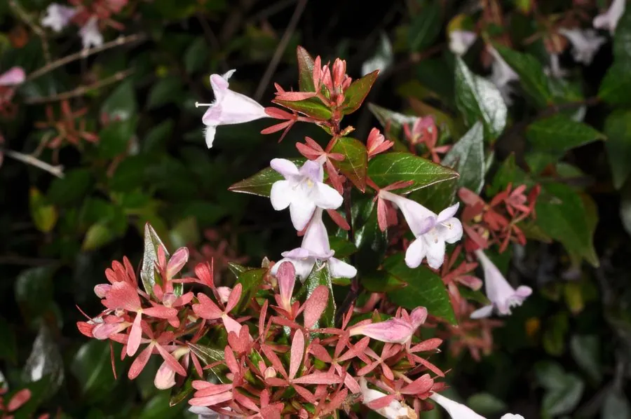

灌木与花木 · 植物界
大花六道木 Abelia × grandiflora

忍冬科半常绿灌木，夏季至秋季开淡粉色钟状花，花大而繁密，耐修剪，是园林中常见的优良花篱材料。
- 分类
- 门被子植物门纲木兰纲目川续断目科忍冬科属六道木属
- 栖息环境
- 园林花篱、花境与庭院，喜光也耐半阴
- 地理分布
- 中国各地园林栽培；为园艺杂交种
- 保护级别
- 暂无评估；栽培杂交种，未见野生居群
物种志
大花六道木为忍冬科六道木属半常绿灌木，是六道木与单花六道木的杂交种，高 1–2 米，枝条拱形下垂。叶对生，卵形至披针形，边缘疏生锯齿。花 1–2 朵生于叶腋，花冠钟状，淡粉色至白色，花大而繁密，花期 6–10 月；果实为瘦果状核果，果期秋季。
大花六道木原产中国，各地园林广泛栽培，喜光，也耐半阴，耐寒、耐旱，适宜疏松肥沃、排水良好的土壤。它花期长、花量大，夏季至秋季花开不断，是园林中常见的花篱、花境与地被材料；叶片在低温下常带紫红色，也有观赏价值。栽培以扦插繁殖为主，耐修剪，花后修剪可促进新枝萌发；光照充足时花量更大、株形更紧凑。
形态与习性
- 株高1–2 米，枝条拱形下垂
- 花期6–10 月，花淡粉色
- 果期秋季，瘦果状核果
- 光照喜光，也耐半阴
- 水分耐旱，忌积水
- 土壤疏松肥沃、排水良好的土壤
- 主要用途花篱、花境与地被绿化
趣味知识
- 大花六道木的花期可从夏季一直开到秋季，花期长达数月。
- 它是六道木与单花六道木的杂交种，花比亲本更大。
- 叶片在低温下常带紫红色，兼具观花与观叶价值。
- 耐修剪，是园林中常用的花篱材料。